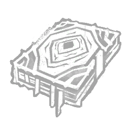

虹彩邪恶黑暗之书 Iridescent Book of Vile Darkness
活动 · 所属：巫妖
效果
集残忍、邪恶与堕落之大成的终极咒典。每当你使用飞行咒术穿过一扇窗户时，封锁该窗户，对所有逃生者持续45秒。强化诅咒飞行咒术，获得以下效果：飞行实体的飞行高度降低-0.7米，使其也能伤害蹲伏中的逃生者。咒术召唤的飞行实体数量减少3个。“面对我数世纪的精心准备，你有何胜算？”——维克那

活动 · 所属：巫妖
集残忍、邪恶与堕落之大成的终极咒典。每当你使用飞行咒术穿过一扇窗户时，封锁该窗户，对所有逃生者持续45秒。强化诅咒飞行咒术，获得以下效果：飞行实体的飞行高度降低-0.7米，使其也能伤害蹲伏中的逃生者。咒术召唤的飞行实体数量减少3个。“面对我数世纪的精心准备，你有何胜算？”——维克那